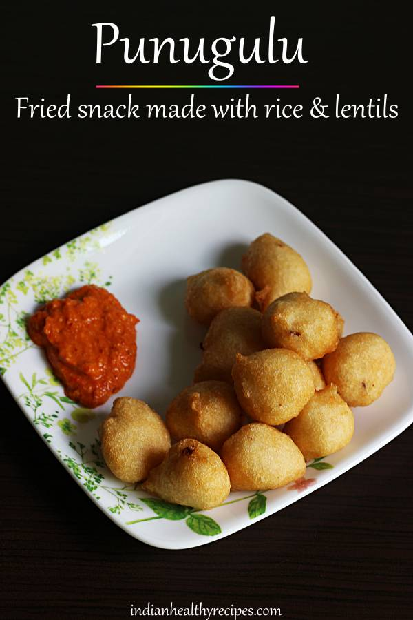
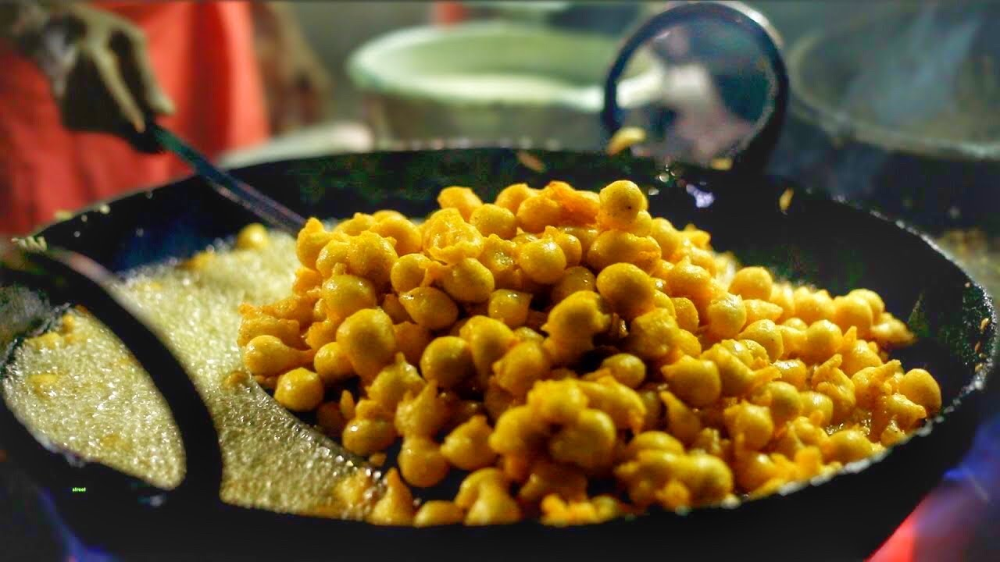
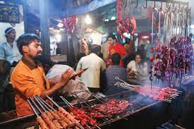
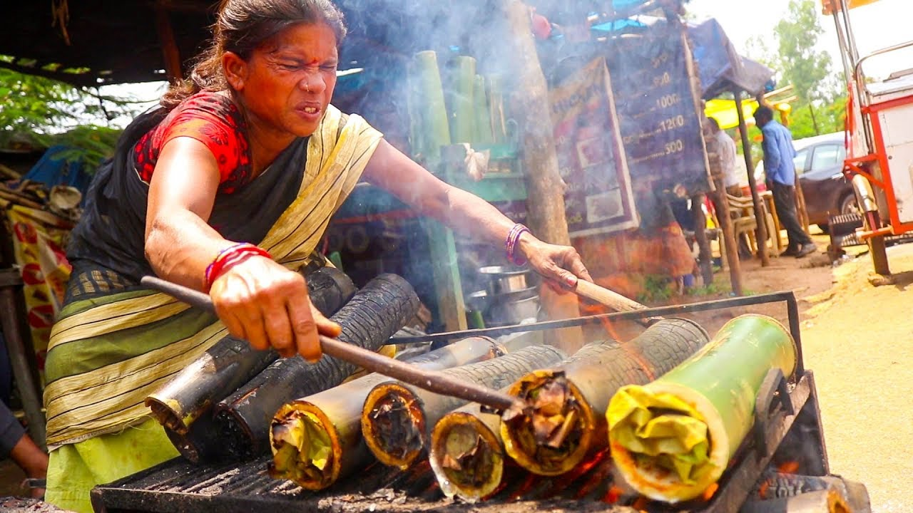
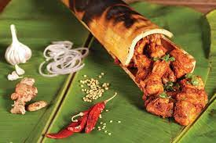
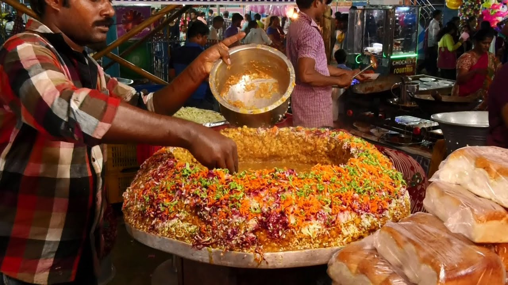
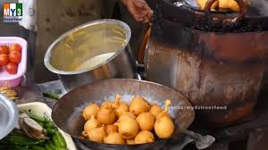

PUNUGULU


Punugulu or Punukkulu is one of the common street food you will find in Vijayawada and several regions of Andhra Pradesh. Punugulu in simple words can be said as a fritters made with rice and lentils batters. The batter is deep fried in hot oil until golden brown and usually served with peanut chutney or white coconut chutney. Punugulu is crispy and crunchy from outside and soft and fluffy from inside.
SWEET CORN


When you are at Visakhapatnam or merely researching which street foods sell best in the state you are sure to come across sweet corn. This street food is always seen at the beachside or the beach roadside. The sweet corn is steamed, mixed with salt, spices, and a pinch of lemon. The variation of spices adds to the variation of the flavour of the sweet corn. You can serve the sweet corn as your customers want it.
LIVER KABAB


Liver kebab are the very popular kebab of Vishakapatnam. It is served with flatbread and lime soda, and it is prepared with lamb liver and spices.



BAMBOO CHICKEN


Bamboo chicken is a dish that immediately grabs attention. Much like matka biryani, kullad chai or tandoori momo, it stands out from the crowd of endless varieties of street foods for its rustic appeal. It's not uncommon to find ingredients being cooked in bamboo hollows across various tribal communities in India. One among them is the adivasi community in Andhra Pradesh, particularly in the quiet little hill station of Araku, where in recent years bamboo chicken has become a rage with tourists and locals, alike. So much so that across Andhra, it's now a signature dish.
MASALA BATANI


Masala batani is another reasonably priced and yet priceless street food that is easily available at the city’s beach roads. The snack is a mixture of chopped onions, boiled peas, a dash of lemon, and tomatoes. It is served in a cute paper cone and you will be given a slice of a dry palm leaf to use it as a spoon. Most of the vendors who sell this snack are elderly people who have been selling at a cheap price and without compromising on the quality. The famous RK Beach close to Submarine is the perfect place to enjoy your masala batani.
TOMATO BAJJI


Another street food superstar, tomato bajji is sold by vendors on the sea beaches of the city. The snack is prepared by coating tomatoes with gram flour and then deep-frying them. The tomatoes are cut from the middle and their flesh scooped out. The tomato cups are then stuffed with a puffed rice mix and are offered with lip-smacking crunchy peanuts. The locals of the state, irrespective of their financial backgrounds, love savoring tomato bajji.